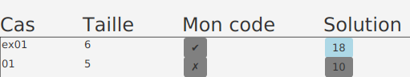

Procédures déplacer/décaler #
Préalable #
- JDK 11 ou plus récent (testé jusqu’à JDK18)
- Git
- Eclipse
Créer le projet #
-
Télécharger shift.zip
-
Copier le fichier
shift.zipà la racine d’un répertoire de travail vide -
Extraire les fichiers directement à la racine de ce répertoire de travail
-
Clic-droit sur le fichier => Extraire tout
-
Effacer
shiftdu chemin proposé -
Cliquer sur Extraire
-
Choisir Remplacer les fichiers dans la destination
-
Vérifier que les fichiers sont à la racine du répertoire de travail
-
-
Ouvrir Git Bash à la racine du répertoire de travail
- Windows 10 : Clic-droit => Git Bash Here
- Windows 11 : Clic-droit => Show more options => Git Bash Here
-
En Git Bash, exécuter le script
ajouter_atelier.sh$ sh scripts/ajouter_atelier.sh-
au besoin fermer Eclipse avant d’exécuter le script
-
appuyer sur Entrée dans fenêtre Git Bash pour vraiment lancer le script
-
-
Attendre que le script termine
-
Ouvrir Eclipse et importer le projet
shift-
File => Import => Existing Projects into Workspace
-
Cliquer sur Browse et naviguer jusqu’à la racine du répertoire de travail
-
Cliquer sur Sélectionner un dossier
-
Vérifier que le projet apparaît dans la case Projects
-
Cliquer sur Finish
-
Créer la classe MonTableau
#
-
Dans Eclipse, sélectionner le projet
shift -
Ajouter la classe suivante au projet
shift- Nom de la classe :
MonTableau - Ne pas cocher
public static ...
- Nom de la classe :
-
Ouvrir la classe
MonTableauet ajuster la signaturepublic class MonTableau extends Tableau { -
En utilisant le raccourci Ctrl+1, effectuer les tâches suivantes
-
importer la classe
Tableau -
ajouter l’annotation
@SuppressWarnings("serial")
-
Créer la classe Procedure
#
-
Ajouter la classe suivante au projet
shift- Nom de la classe :
Procedure - cocher
public static ...
- Nom de la classe :
-
Ouvrir la classe
Procedureet ajuster la signaturepublic class Procedure extends ProcedureDecaler<MonTableau> { -
En utilisant le raccourci Ctrl+1, effectuer les tâches suivantes
-
importer la classe
ProcedureDecaler -
ajouter la méthode obligatoire
classeMonTableau
-
-
Ajouter le code suivant à la méthode
mainpublic static void main(String[] args) { NtroClientFx.launch(args); }- utiliser Ctrl+1 pour corriger les erreurs de compilation
-
Ajouter le code suivant à la méthode
classeMonTableauprotected Class<MonTableau> classeMonTableau() { return MonTableau.class; }
Coder les procédures dans la classe MonTableau
#
-
Ouvrir
MonTableau -
Ajouter la méthode suivante :
@Override public void deplacerDecaler() { } -
Par héritage,
MonTableaucontient déjà les attributs que vous devez utiliser
IMPORTANT
- il faut utiliser ces attributs plutôt que des variables
- p.ex. utiliser l’attribut
idans la boucleforet non une variableint i
- p.ex. utiliser l’attribut
- sinon l’outil de validation ne pourra pas visualiser l’exécution de votre code
- il faut utiliser ces attributs plutôt que des variables
-
Coder les deux procédures directement dans la méthode
deplacerDecaler- la méthode
deplacerDecalerappelée par l’outil de validation pour exécuter une de vos procédures - selon la valeur de l’attribut
insrerAuDebut, votre code devra exécuter la procédure pour déplacer au début, ou sinon la procédure pour déplacer à la fin - TRUC ajouter des méthodes privées à votre classe
MonTableauet les appeler selon la valeur deinsererAuDebut
- la méthode
Exécuter l’outil de validation #
-
Clic-droit sur
Procedure.java=> Run As => Java Application -
L’outil va vous indiquer si votre code est une solution (✔) ou s’il contient une ou des erreurs (✗)
IMPORTANT
- il faut quand même regarder la console pour voir les exceptions de type
IndexOutOfBoundsouNullPointerException - vous pouvez quand même utiliser le débogueur
- il faut quand même regarder la console pour voir les exceptions de type
Utiliser l’outil de validation pour visualiser votre code #
-
Pour que l’outil puisse afficher chacune des étapes de la procédure, vous devez ajouter à la main des instructions
Execution.ajouterEtape(), p.ex.@Override public void deplacerDecaler() { i = 0; Execution.ajouterEtape(); memoireA = cartes[0]; Execution.ajouterEtape(); }- c’est à vous de décider ce qui constitue une étape.
- cela n’influence pas la validation, mais vous permet de visualiser ce que votre code fait et pourrait vous aider à trouver des erreurs
Question bonus #
-
Coder une autre procédure qui implante l’opération déplacer au début
-
Avec l’outil de validation, comparer le nombre d’étapes entre la procédure vue en théorie et la votre
-
Quelle est la différence d’efficacité? Est-ce une grosse différence selon vous?